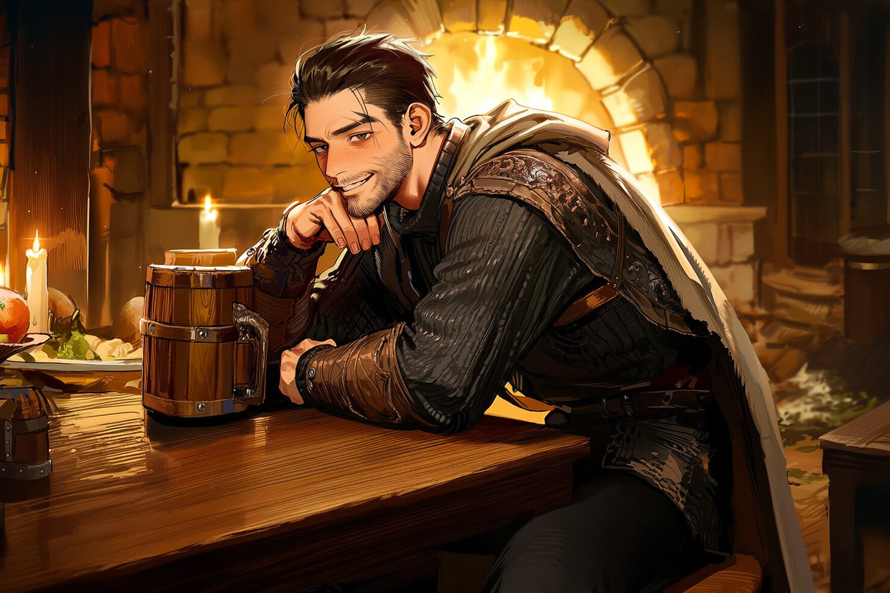

술집의 음악과 함께 모험이 시작됩니다.
♪ 음악은 우측 상단 버튼으로 끌 수 있습니다

한 잔의 에일을 비우며, 술집 구석의 음유시인이 묻습니다.
"당신은 어디서 왔으며, 어떤 일에 칼을 뽑소?"
14개의 짧은 질문이 당신의 종족·직업·성향·능력치를 비춰드립니다. 검을 들든 책을 들든, 모험은 곧 당신을 기다립니다.
테스트 없이 종족 · 직업 도감만 둘러볼 수도 있어요 ↓
D&D 세계관의 열두 종족을 만나보세요.
D&D 세계관의 열세 직업을 만나보세요.